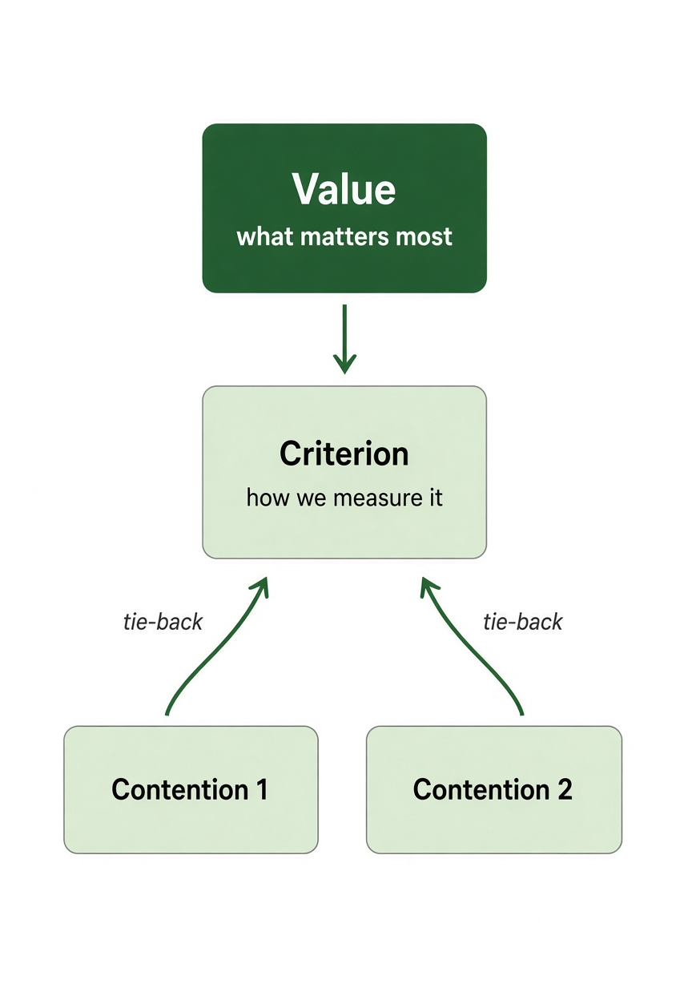

Chapter 13: Debating Values
In this chapter
- Objectives
- Key terms
- The idea
- 13.1 What a value debate asks
- 13.2 The framework: value and criterion
- 13.3 The tie-back
- 13.4 The tautology trap
- 13.5 Debating the framework
- 13.6 Using facts you have already established
- 13.7 What a value debate hands to policy
- Say it
- Worked examples
- A personal decision
- A global question
- How a judge weighs it
- Common mistakes
- Practice
- Check questions
Move: Build, Weigh. Builds on: Chapters 3, 6 and 10. Where you use it: every value debate, and any time a debate turns on what matters most.
Objectives
By the end of this chapter you should be able to:
- Explain what a value resolution asks and why it needs a framework instead of a fixed criterion.
- Choose a value and write a value criterion that measures it.
- Tie each contention back to the criterion.
- Recognize and avoid the tautology trap.
- Debate the framework itself, and win under your opponent's framework when you have to.
- Use facts established earlier, and explain what a value debate hands to policy.
Key terms
Value resolution, framework, value, value criterion, tie-back, framework debate, tautology, turning the framework.
The idea
13.1 What a value debate asks
A value resolution asks for a judgment: whether something is good or bad, or whether one thing matters more than another. Chapter 3 gave the markers: words like ought, better, more important, harmful or justified. "A college education is more valuable than work experience" is a value resolution. So is this book's: "Artificial intelligence does more harm than good."
A value debate is different from a fact debate in one important way. In a fact debate, the criterion is settled before the debate starts: preponderance of evidence. In a value debate, the standard for deciding is part of what the debaters argue about. "More harm than good" according to what? Harm to jobs? To privacy? To human life? Different standards produce different answers, so each side has to propose a standard and defend it. That standard is called the framework.
13.2 The framework: value and criterion
A framework is the standard each side asks the judge to use to decide a value debate. It has two parts.

The value is the principle that should matter most in this debate: the thing the judge should try to protect or promote. Common values include quality of life, justice, liberty, human dignity, security and sustainability. A value is abstract on purpose. It names an ideal, not a measurement, which is why a value alone cannot decide a debate. Two debaters can both claim to promote "quality of life" and mean completely different things.
The value criterion is how we know whether the value has been achieved: the measurement that turns an abstract value into something a judge can check. If the value is quality of life, the criterion might be reducing poverty, or minimizing suffering, or preserving access to healthcare. Each of those points the judge toward different evidence. A strong criterion is almost always a transitive verb plus a measurable outcome: minimizing suffering, maximizing economic security, preserving biodiversity. The verb says what to do; the outcome says what to count. A criterion like "fairness" fails this test, because it is just another value. A criterion like "reducing the number of people who lose their income" passes it, because a judge can compare sides on it.
Here is a simple illustration. Imagine a debate about what makes the best athlete. Both sides might agree the value is athleticism but disagree on the criterion: one says whoever jumps highest, the other says whoever runs farthest. Or the sides might disagree on both: one side values strength, measured by the heaviest bench press, and the other values intelligence, measured by memorizing the most digits of pi. In the first case the debate is about measurement. In the second, it is about what matters at all. Real value debates can take either shape.
13.3 The tie-back
Chapter 2 said that in a value debate, a contention adds a fourth step after the claim, warrant and implication: the tie-back, which shows how the contention meets the criterion. The tie-back is what makes a contention count under the framework. Without it, the judge has a true argument but no instruction for how it fits the standard they were asked to use.
Take the AI value resolution with the value of quality of life and the criterion of reducing poverty. An affirmative contention argues that AI displaces workers faster than they can retrain. The claim, warrant and implication prove the displacement. The tie-back finishes the job: "Displaced workers without new jobs fall into poverty, so this contention shows that AI increases poverty, which means it fails our criterion and does more harm than good." Every contention in a value case should end this way, pointing straight at the criterion.
The tie-back is also a test. If you cannot write a clear tie-back for a contention, either the contention does not belong in the case or the criterion is wrong for your side.
13.4 The tautology trap
Some resolutions tempt debaters into a circular framework. Take a resolution like "Economic growth ought to be valued over environmental protection." The affirmative is tempted to choose economic growth as its value, and the negative to choose environmental protection. But then the affirmative is arguing that economic growth matters more because economic growth is what matters most. That is a tautology: a justification that just repeats its conclusion. It gives the judge no independent reason to prefer either side, and it makes the debate impossible to resolve.
The fix is to choose a value and criterion that sit above the resolution, a standard both sides could argue under. For that resolution, the affirmative might choose quality of life measured by reducing global poverty; the negative might choose the same value measured by reducing disease, or a different value such as sustainability, measured by ensuring humanity's long-term survival. Now the debate has real questions in it. Does economic growth or environmental protection do more to reduce poverty? To reduce disease? Each side can even argue that it wins under the other side's framework, which is a sign the framework is doing its job.
13.5 Debating the framework
The framework debate is the part of a value debate where the sides argue about which value and criterion the judge should use. It often comes first in a speech, because the framework decides how everything else is weighed. Three moves cover most of it.
First, defend your framework on its merits. Why is your value the most important one for this resolution? Why is your criterion the best way to measure it? Good reasons are about the resolution: "The resolution asks about harm, and poverty is the harm that touches the most people and shapes every other part of their lives."
Second, attack your opponent's framework when it is weak. A criterion that cannot be measured, that is unrelated to the resolution, or that is just the resolution restated in other words is a real problem, and saying so is a legitimate argument.
Third, and most important, be ready to win under their framework. This is called turning the framework: showing that even by your opponent's standard, your side wins. If the negative says the criterion should be reducing disease, the affirmative can argue that AI-driven job loss reduces access to healthcare and so increases disease. A debater who wins under both frameworks has made the framework debate irrelevant, and has won.
A common mistake is to spend most of the debate on the framework. Frameworks are important, but they are a tool for weighing contentions, not a substitute for them. The judge still needs a reason, under whichever framework wins, to vote for you.
At a glance
| Term | What it is | Example (AI value resolution) |
|---|---|---|
| Value | The principle that matters most | Quality of life |
| Value criterion | How we measure the value: a transitive verb plus a measurable outcome | Reducing poverty |
| Tie-back | The step that shows a contention meets the criterion | "Displaced workers fall into poverty, so AI fails our criterion." |
| Tautology | A framework that just repeats one side of the resolution | Valuing "economic growth" on a resolution about economic growth |
| Turning the framework | Winning under the opponent's framework too | "Even under reducing disease, job loss cuts healthcare access." |
13.6 Using facts you have already established
This book's sequence puts the value debate on the same subject as the fact debate before it. That means you are not starting over. The research, evidence and arguments from the fact debate are now material for the value debate.
If the fact debate examined whether AI will create more jobs than it displaces, both sides of the value debate already know the strongest evidence on that question, and both know how it was answered. An affirmative arguing that AI does more harm than good can use the displacement evidence directly in a contention, now with a tie-back to its criterion. A negative can use the job-creation evidence the same way. What changes is the question the evidence is answering. In the fact debate, the question was "is this true?" In the value debate, it is "how much does this matter, measured by our criterion, compared with everything else AI does?" Job numbers are now one impact among many, weighed against impacts on health, privacy, education and more.
13.7 What a value debate hands to policy
A value debate settles what matters most. That is exactly what a policy debate needs to weigh its impacts. When the policy debate asks whether the federal government should restrict AI development, the advantages and disadvantages will compare very different impacts: jobs, safety, competitiveness, rights. The weighing arguments from the value debate (why poverty matters more than convenience, or why preventing irreversible harm comes first) carry straight into the policy debate's impact calculus. Chapter 15 shows how the affirmative uses them.
Say it
- Present the framework: "My value is quality of life. My criterion is reducing poverty, because..."
- Tie back: "This means AI increases poverty, so it fails my criterion."
- Attack a criterion: "Their criterion can't be measured, so it can't help the judge decide."
- Name a tautology: "Their value is just their side of the resolution. That's circular."
- Turn the framework: "Even under their criterion, we win, because..."
Worked examples
A personal decision
Resolution: For most students, saving money is more important than the four-year campus experience.
The affirmative avoids the tautology of valuing "saving money." It chooses the value of long-term well-being, with the criterion of minimizing financial insecurity after graduation. Its contentions argue that student debt shapes career choices and delays milestones like buying a home, each tied back to financial insecurity. The negative accepts long-term well-being as the value but proposes a different criterion: maximizing career opportunities. It argues that campus networks and on-campus jobs open doors. The affirmative turns the framework: transfer students reach the same campus in their third year, and graduating with less debt gives them more freedom to take the opportunities they find. The debate comes down to which criterion better measures long-term well-being, and whether the affirmative's turn holds.
A global question
Resolution: Artificial intelligence does more harm than good.
The affirmative's framework is human dignity, measured by preserving people's control over decisions that affect their lives. Its contentions cover automated decisions in hiring and lending, and displacement from work, each tied back to loss of control. The negative's framework is quality of life, measured by minimizing preventable death, with contentions on faster drug discovery and earlier disease detection. In the rebuttals, the negative argues its criterion is more measurable and its impact more severe. The affirmative turns the framework partly, arguing that displacement worsens health outcomes, and argues its own criterion matters more because the loss of control is spreading and hard to reverse. The judge decides the framework first, then weighs the surviving contentions under it.
How a judge weighs it
A judge in a value debate usually decides in two steps. First: which framework should I use? The judge looks at which value and criterion were better defended and which side answered the other's framework arguments. Second: under that framework, who wins? The judge looks for contentions with clear tie-backs to the winning criterion. A debater who loses the framework but wins under it still wins. A debater who wins the framework but has no contentions tied to it usually does not.
Common mistakes
- A criterion that is just another value. "Fairness" does not measure anything. Use a verb and a measurable outcome.
- The tautology trap. Do not make your value your side of the resolution.
- Skipping the tie-back. A contention without one does not count under any framework.
- All framework, no contentions. The framework is a tool for weighing arguments, not a replacement for them.
- Ignoring the opponent's framework. Answer it, and show you win under it too.
Practice
Drill: criterion builder (15 minutes, pairs). For each of three values (quality of life, justice, security), write two possible criteria in the form "transitive verb plus measurable outcome." Swap with your partner and test each one: could a judge actually compare two sides using it?
Drill: turn it (15 minutes, pairs). One partner presents a framework for the AI value resolution. The other has two minutes to prepare and one minute to argue that their side wins under that framework.
Writing exercise. Write a complete affirmative framework for "Artificial intelligence does more harm than good": value, criterion, a two-sentence justification, and one contention with a full tie-back. Then, in 150 words, explain how you would answer a negative that chose a different criterion.
Check questions
Choose an answer to see feedback. Nothing is recorded.
1. Why does a value debate need a framework when a fact debate does not?
2. Which is the strongest value criterion for the value of quality of life?
3. A contention proves AI displaces workers, but never connects that to the criterion of reducing poverty. What is missing?
4. On the resolution "Economic growth ought to be valued over environmental protection," the affirmative chooses economic growth as its value. What is the problem?
5. The negative argues the criterion should be reducing disease. The affirmative replies that AI-driven job loss cuts healthcare access and increases disease. What is the affirmative doing?